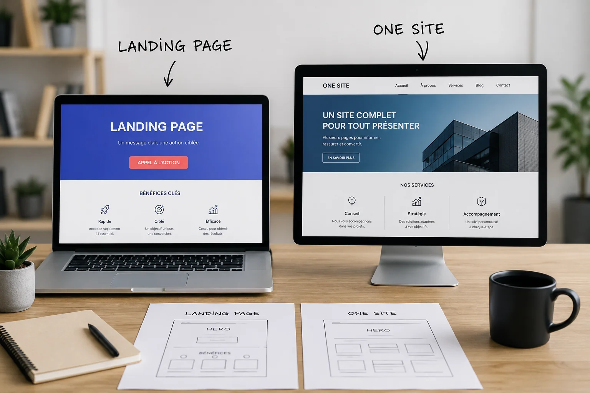

Vous savez que vous avez besoin d'un site internet, mais vous hésitez entre Landing Page, One-Page et Site Vitrine classique. C'est normal : ces trois formats se ressemblent en apparence, mais ils ne servent pas du tout le même objectif. Voici comment trancher en fonction de votre activité.
Les 3 formats en une phrase
- Site Vitrine classique : plusieurs pages (accueil, services, à propos, contact…) qui présentent l'ensemble de votre activité.
- Landing Page : une seule page, entièrement dédiée à une seule offre ou une seule action précise.
- One-Page : une seule page aussi, mais qui condense l'ensemble de votre activité en sections qui s'enchaînent au scroll.
La confusion vient souvent du fait que Landing Page et One-Page sont toutes les deux "une seule page". La vraie différence n'est pas le nombre de pages, c'est l'objectif.
Le Site Vitrine classique : pour qui ?
Le site vitrine classique est composé de plusieurs pages distinctes, avec un menu de navigation. C'est le format le plus complet, et c'est aussi celui qui fonctionne le mieux pour le référencement naturel sur le long terme : chaque page peut cibler un mot-clé ou un service différent.
C'est le bon choix si :
- Vous proposez plusieurs prestations distinctes
- Vous voulez être visible sur plusieurs requêtes Google différentes
- Vous avez besoin d'un blog pour publier régulièrement
- Vos clients ont besoin de plusieurs informations avant de vous contacter (tarifs, avis, réalisations, zone d'intervention…)
Exemples typiques : un artisan qui propose plusieurs services, un restaurant avec sa carte, ses horaires et ses réservations, une profession libérale avec plusieurs domaines de compétence.
La Landing Page : pour qui ?
La Landing Page (page d'atterrissage) n'a qu'un seul but : convertir le visiteur sur une action précise — laisser ses coordonnées, s'inscrire à un événement, profiter d'une offre limitée dans le temps. Tout sur la page pousse vers cette unique action, sans distraction.
C'est le bon choix si :
- Vous lancez une campagne publicitaire (Google Ads, Meta Ads)
- Vous voulez promouvoir une offre ponctuelle ou un événement
- Vous testez le marché pour un nouveau produit ou service
- Vous voulez un taux de conversion maximal sur un objectif unique
À noter : une Landing Page n'est pas pensée pour le SEO long terme. Elle est généralement faite pour recevoir du trafic payant ou ciblé (publicité, réseaux sociaux, campagne email), pas pour être trouvée naturellement sur Google sur le long terme.
Exemple typique : un coach sportif qui lance un programme de 8 semaines à places limitées et veut un maximum d'inscriptions rapidement.
La One-Page : pour qui ?
La One-Page ressemble à un site vitrine classique, mais condensé en une seule page que l'on parcourt par sections (présentation, services, à propos, avis, contact). C'est le format le plus simple et le plus rapide à mettre en place.
C'est le bon choix si :
- Votre activité est simple à présenter, sans besoin de plusieurs pages distinctes
- Vous démarrez votre activité et voulez une présence en ligne rapide et économique
- Vous n'avez pas besoin de blog ni de SEO sur plusieurs mots-clés
- Vous voulez une "carte de visite en ligne" claire et soignée
La limite : une One-Page se positionne en général sur un nombre réduit de mots-clés, puisque tout le contenu vit sur une seule URL. Elle est moins évolutive qu'un site vitrine classique si votre activité grandit.
Exemple typique : un freelance qui démarre, un indépendant avec une offre simple et unique, un commerce de proximité qui veut juste être trouvable et présenté correctement en ligne.
En résumé
- Besoin de présenter plusieurs services et d'être visible sur Google sur le long terme → Site Vitrine classique.
- Besoin de convertir un maximum sur une offre ponctuelle, via de la pub → Landing Page.
- Besoin d'une présence en ligne simple, rapide et économique → One-Page.
Comment choisir selon votre activité
- Artisan avec plusieurs prestations → Site Vitrine classique, pour détailler chaque service et être trouvé sur plusieurs requêtes.
- Coach sportif qui lance une offre limitée dans le temps → Landing Page, pour maximiser les inscriptions sur cette offre précise.
- Indépendant qui démarre son activité → One-Page, pour une présence rapide, claire et économique.
- Restaurant → Site Vitrine classique, pour la carte, les horaires, la page contact et, si besoin, un blog.
Le bon format n'est pas le plus impressionnant. C'est celui qui correspond exactement à votre objectif.
Notre recommandation chez Central Web Agency
Chez Central Web Agency, nous proposons les trois formats — Site Vitrine classique, Landing Page et One-Page — et nous vous orientons vers celui qui correspond réellement à votre activité et à votre budget, pas vers le plus cher.
Nos tarifs sont clairs et accessibles, à partir de 450€ TTC en paiement unique. TVA non applicable, art. 293B du CGI. Le détail de chaque formule est disponible sur notre page Nos offres.
Si vous hésitez encore entre les trois, le plus simple reste d'en discuter directement : en quelques minutes, on identifie ensemble le format le plus adapté à votre activité.